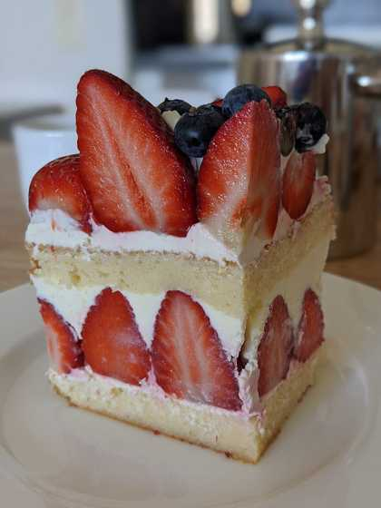
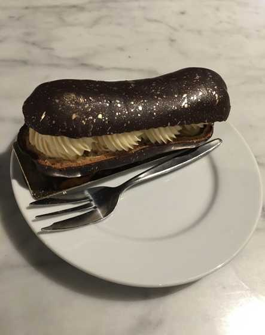

鳥取県八頭町郡家 / フランス菓子とカフェ
回り道が、
おいしい寄り道になる。
店名の「デトゥール」は、フランス語で「回り道」。ケーキを選んで、ゆっくりお茶を。(コンセプトは制作側の案です)
ABOUT
お店について
パティスリーカフェ・デトゥールは、鳥取県八頭町郡家で、フランス菓子の製造・販売をしているお店です(Instagramのプロフィールより)。ご夫婦で営まれ、紹介記事によると、パティシエの旦那様は東京の「イル・プルー・シュル・ラ・セーヌ」で修行を積んだ職人とされています。店名の「detours」はフランス語で「回り道」の意味と紹介されており、ケーキを買うだけでなく、寄り道してお茶をする場所としても楽しめるお店です。ショップスペースと奥のカフェスペースがあります。
情報源: 紹介記事(masa-ka.net) / Instagram @detours553 / 食べログ
店名の意味以外の言い回し(見出しなど)は制作側の表現です。創業の経緯や店主の想いは確認できていないため記載していません。


MENU
メニュー
ケーキ、焼き菓子、ホールケーキなどのフランス菓子を扱っているとされています(Instagram・紹介記事より)。商品名・価格・営業時間・定休日は変更があるため、ここでは「準備中」としています。最新情報はInstagramをご覧ください。
| ケーキ・焼き菓子 | 準備中 |
|---|---|
| カフェ | 準備中 |
| 価格 | 準備中 |






VOICE
口コミ(イメージ例)
以下は制作側が想定した創作の例で、実在のお客様の声ではありません。
イメージ例
ショーケースに並ぶケーキを眺めながら選ぶ時間が楽しい、そんなお店のイメージです。
イメージ例
買い物の途中に、奥のカフェスペースでひと息つく。そんな過ごし方が似合いそうです。
イメージ例
手みやげに焼き菓子を選ぶ。贈る相手を思い浮かべる時間まで楽しめそうです。